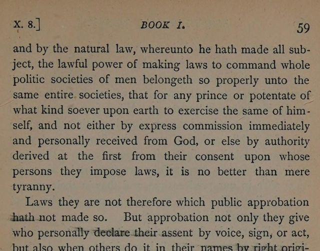
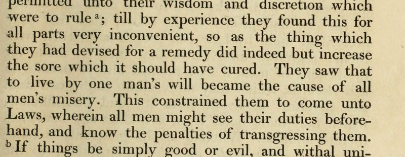
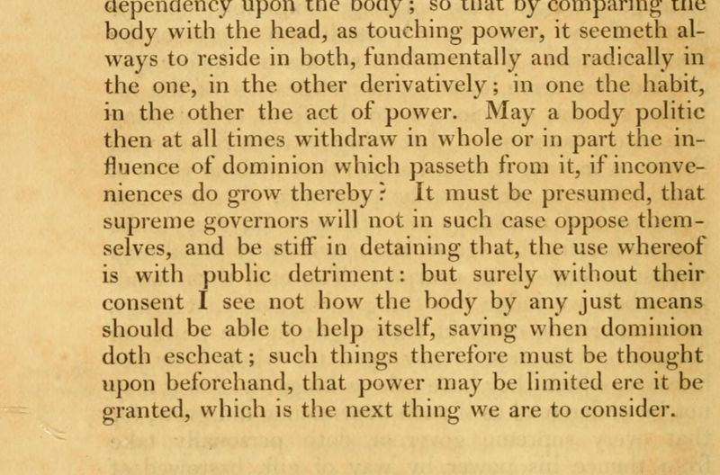

“It is no better than mere tyranny” (Book I, ch. X § 8)
English: p. 59, scan. Highlighted: Lecky’s quotation.

… That which we spake before concerning the power of government must here be applied unto the power of making laws whereby to govern; which power God hath over all: and by the natural law, whereunto he hath made all subject, the lawful power of making laws to command whole politic societies of men belongeth so properly unto the same entire societies, that for any prince or potentate of what kind soever upon earth to exercise the same of himself, and not either by express commission immediately and personally received from God, or else by authority derived at the first from their consent upon whose persons they impose laws, it is no better than mere tyranny.
Laws they are not therefore which public approbation hath not made so. But approbation not only they give who personally declare their assent by voice, sign, or act, but also when others do it in their names by right originally at the least derived from them. As in parliaments, councils, and the like assemblies, although we be not personally ourselves present, notwithstanding our assent is, by reason of others, agents there in our behalf. … As for example, when an absolute monarch commandeth his subjects that which seemeth good in his own discretion, hath not his edict the force of a law whether they approve or dislike it? Again, that which hath been received long sithence and is by custom now established, we keep as a law which we may not transgress; yet what consent was ever thereunto sought or required at our hands?
Lecky’s wording differs slightly: “belonging” for “belongeth”, “political” for “politic”, “not by express commission” for “not either by express commission”, and “from authority” for “by authority”.
“To live by one man’s will” (Book I, ch. X)
English: Works, 1820, vol. I p. 245, scan n256. Highlighted: Lecky’s quotation in the text at note 92.

… At the first, when some certain kind of regiment was once approved, it may be that nothing was then further thought upon for the manner of governing, but all permitted unto their wisdom and discretion which were to rule; till by experience they found this for all parts very inconvenient, so as the thing which they had devised for a remedy did indeed but increase the sore which it should have cured. They saw that to live by one man’s will became the cause of all men’s misery. This constrained them to come unto Laws, wherein all men might see their duties beforehand, and know the penalties of transgressing them.
Lecky (vol. II, ch. V, text at note 92): “The regal power was at first absolute, but soon ‘men saw that to live by one man’s will became the cause of all men’s misery, and this constrained them to come into laws wherein all men might see their duty.’” He joins two sentences and writes “into” for “unto”, “duty” for “duties”.
May the body politic take back its power? (Book VIII)
English: Works, 1820, vol. III p. 306, scan n311, in the part headed (p. 297) “what the power of dominion is”; the next part is headed “In what measure”. Lecky cites “b. viii. ch. ii.”; this edition does not number its chapters here. Highlighted: Lecky’s quotation in the text at note 94.

… so that by comparing the body with the head, as touching power, it seemeth always to reside in both, fundamentally and radically in the one, in the other derivatively; in one the habit, in the other the act of power. May a body politic then at all times withdraw in whole or in part the influence of dominion which passeth from it, if inconveniences do grow thereby? It must be presumed, that supreme governors will not in such case oppose themselves, and be stiff in detaining that, the use whereof is with public detriment: but surely without their consent I see not how the body by any just means should be able to help itself, saving when dominion doth escheat; such things therefore must be thought upon beforehand, that power may be limited ere it be granted, which is the next thing we are to consider.
Lecky (vol. II, ch. V, text at note 94) calls these Hooker’s “melancholy words” on “the last great question”, resistance. His quotation differs from this edition in small ways (“body-politick”, “that influence”, “inconvenience doth grow”, “in such cases”) and in one that changes the sense: he prints “by any fresh means”, where this edition has “by any just means”. Hooker denies that the people may lawfully take back power without the ruler’s consent; Lecky’s “fresh” turns a question of right into one of method. (Lecky’s reading checked on his own page: vol. II p. 201, scan n216.) We have not seen the edition Lecky used, so whether “fresh” is his slip or his edition’s reading is open. Hooker’s answer to the question is in any case followed at once by its remedy: limit power “ere it be granted”. Book VIII was published only after Hooker’s death.
Further down the rabbit hole
Sources that Lecky cites in the notes next to the ones that cite this page.
- Hallam, Literature of Europe and Constitutional HistoryHow Lecky quotes Hallam on persecution
- Bossuet, Defensio declarationis cleri gallicaniKings as fathers: “Abimelech” means “My father the king”
- Locke, Two Treatises of GovernmentNo taxation without consent, and the pulpit’s favourite absolutist
- Elrington, Life of UssherTwelve Irish bishops declare toleration “a grievous sin” (1626)
- An Homily against Disobedience and Wilful RebellionHell as the prison of rebels: the Church of England preaches obedience
- Aquinas, Summa theologiae, II-IIHeretics and forgers; the usurper’s subjects


Backlinks
Every place in Rationalism in Europe that links to this page (generated automatically when the site is built).